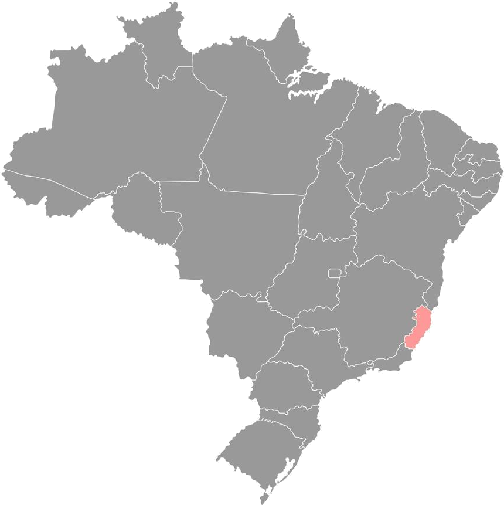

UNIDADE ATIVA01
SÃO MATEUS — ES
COMANDO GERALSede do Projeto Jovem Militar, responsável pela coordenação geral, diretrizes e expansão das unidades.
VER UNIDADE → PROJETO JOVEM MILITARESCOLA PREPARATÓRIA PRÉ-MILITAR DO ESPÍRITO SANTOCOMANDO GERAL
INSCREVA-SE
PROJETO JOVEM MILITARESCOLA PREPARATÓRIA PRÉ-MILITAR DO ESPÍRITO SANTOCOMANDO GERAL
INSCREVA-SE
O Projeto Jovem Militar amplia sua presença para levar disciplina, cidadania e oportunidades a mais jovens no Espírito Santo e região.

Conheça a presença do Projeto Jovem Militar e a situação de cada localidade.
Sede do Projeto Jovem Militar, responsável pela coordenação geral, diretrizes e expansão das unidades.
VER UNIDADE →Unidade em fase de implantação, ampliando a presença do PJM na região Noroeste do Espírito Santo.
SAIBA MAIS →Nova frente de formação e cidadania, levando a proposta do PJM a mais jovens da região.
SAIBA MAIS →Localidade prevista no planejamento de expansão do Projeto Jovem Militar.
SAIBA MAIS →Presença planejada para ampliar as oportunidades de formação, disciplina e cidadania.
SAIBA MAIS →Expansão regional prevista, levando a proposta do PJM para além das fronteiras do Espírito Santo.
SAIBA MAIS →“Mais que unidades,
estamos formando um futuro melhor.”